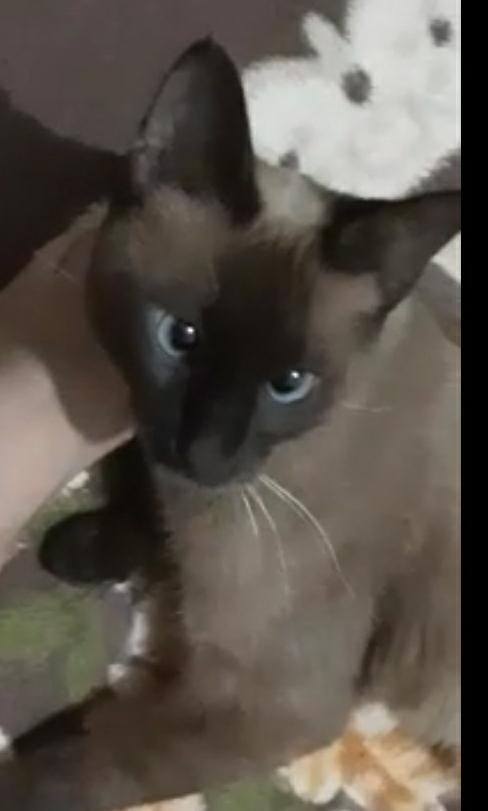
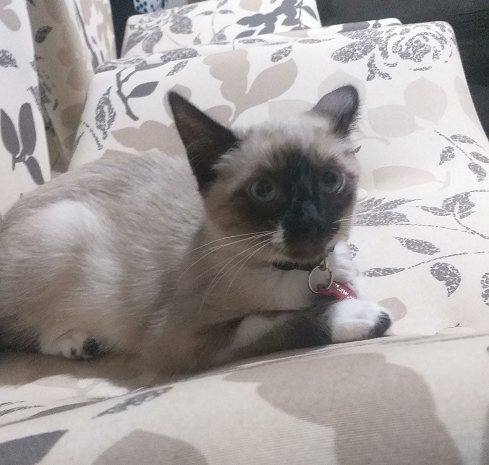
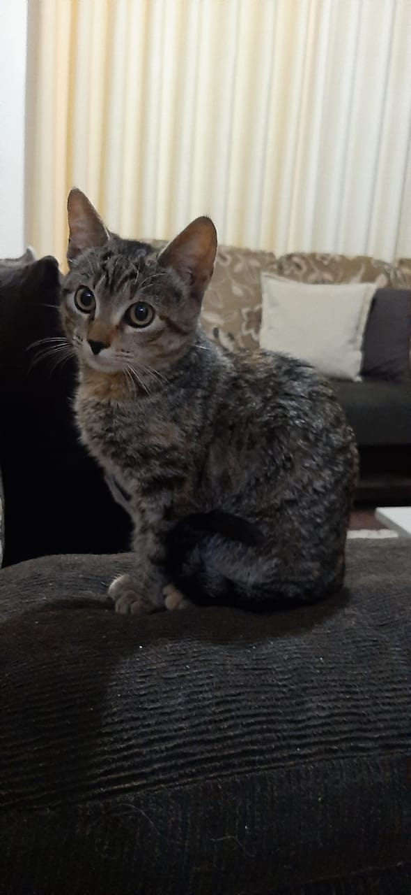
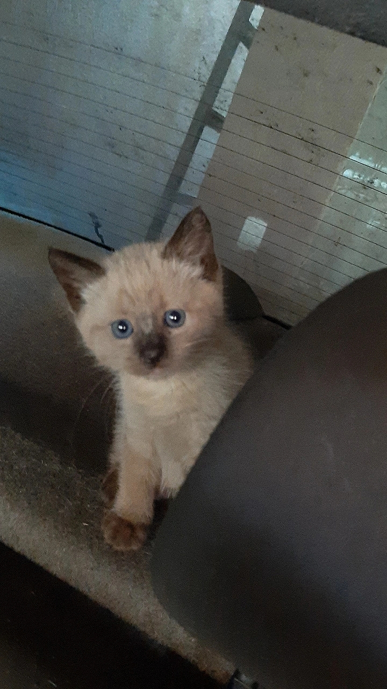
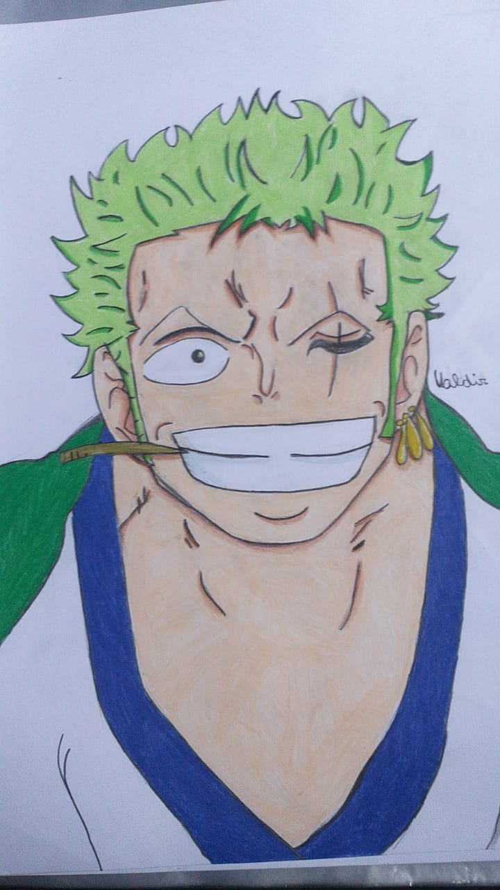
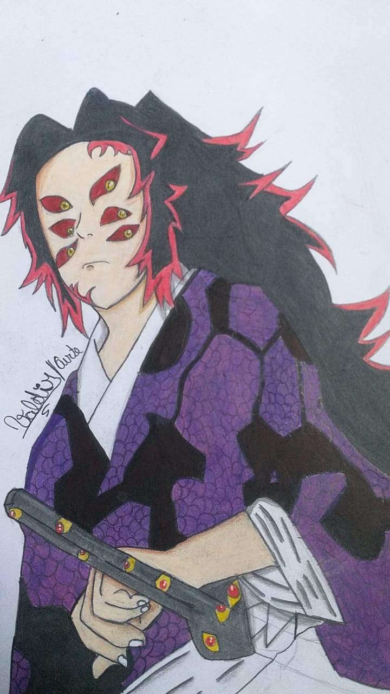
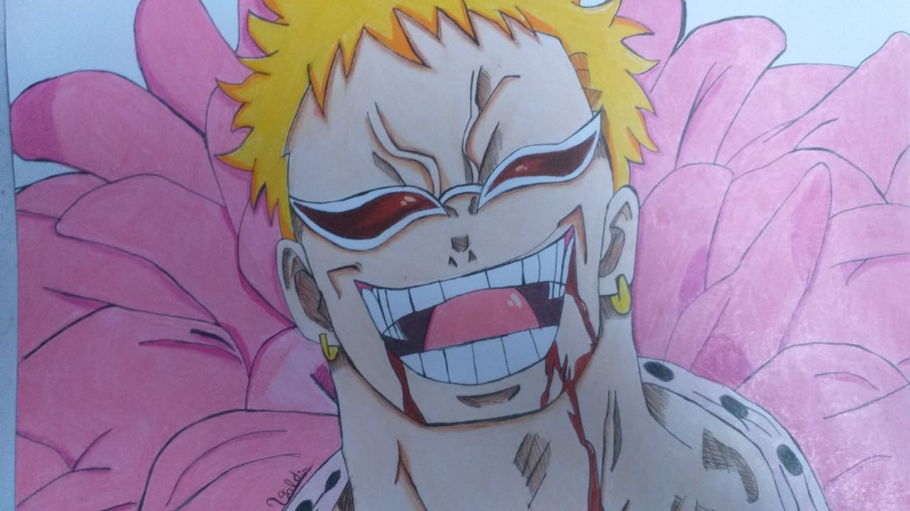

Este site conta uma parte da vida de Valdir Moura.
Valdir faz 9 aninhos hoje, parabens senhor valdir.
Nosso elfo preferido tem muitas coisas presentes em sua vida, veja estas a seguir:
Gatas:
Ao longo do tempo, valdir teve muitas gatas, como: Xaninha, Paçoquinha e entre outras. A seguir, veremos as presentes em sua vida.
Vesgita:

Vesgita, tem este curioso e chamativo nome pois tem seus olhos vesgos. Ela foi achada e meio a um deserto caloroso e seco por Valdir e seu fiel macaco matheus.
Uatizap(vulgo zap zap):

zap zap, recebe o nome de uma lendaria dinvindade vinda do espaço sideral para colonizar os ratos de porão. no entanto esta foi derrotada por Valdir e sua dupla infalivel. Zap zap apareceu derrepente na casa de Valdir. Esta, hoje é adorada por todos os seres humanos de todo o planeta.(o nome dela nao é robertinha)
Xumbita:

Xumbita,quando nasceu, tomou rajadas de xumbo, e assim foi nomeada jus a historia desta. Alem de seu nome vir pelo xumbo, ela ganho habilidade tais quais sao impossiveis de se descrever. Ela foi achada no monte everest cuidando de algumas pessoas, valdir a levou e cuidou com carinho.
Gatinha nenem 2(nao tem nome ainda):

A pequena filhote, apareceu esses dias na casa de valdir. nao se sabe ao certo sua origem, sabe-se apenas que a mesma tem uma forte ligação com Zap Zap e a "filha da vesga"
Os melhores desenhos do Elfo

zorao em minha suposição é o personagem favorito do Elfo de One Piece

Jotaro é um personagem muito F0d4. ele usa bone :)

Senhor kokushibo ou sla oq, é o lua superior um, sendo o mais forte dentre as luas.

Dlofamingo, é o meu desenho favorito que o valdir ja fez. Muito caramboleira